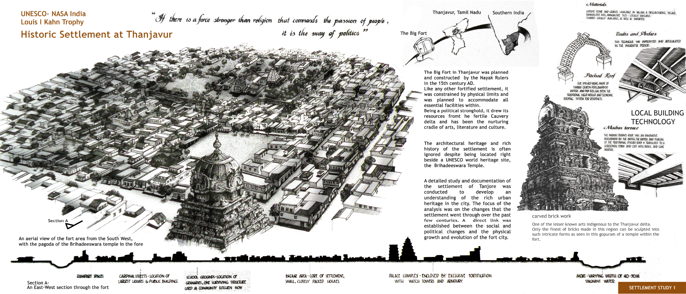
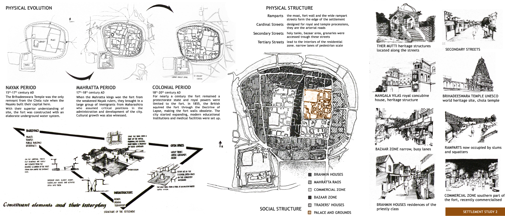

Unearthing Stories of India's Historic Settlements: Thanjavur
UNESCO and National Association of Students of Architecture together curated the annual convention for students, particularly the competition track titled Louis I Kahn Trophy
I led the analysis and content research, design and presentation. A team of 35 students of NIT Trichy chose to work on the historic evolution of the urban fabric of the city of Thanjavur, across a few thousand years, with a closer focus on years 1500-present. We pieced together evidence from teh material and physical environment of the city, to trace back the story of how the city responded to the changes in rulers, governance, as well as the change of status from capital city to a relatively small city in terms of prominence.
 This project took 6 months of research, conversations with several eminent historians, and lots of time spent on site, in the historic fort of Tanjavur. An enormous team worked on collating this data, documenting and manually drafting one residence of a minister of the erstwhile Maratha Kingdom.
Graphic credits: Anil Kumar Ramakoti and Pashupati Diyali